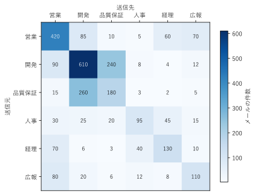

第 13 章 関係とつながりを見る
第 11 章の階層構造や第 12 章の流れは、向きのそろった構造であった。この章では、より一般的な「つながり」を描く図として、依存関係グラフ、ER 図、ネットワーク構成図を扱う。また、ノードやエッジが多い場合に図を読みやすくする工夫として、クラスターによるまとめと、行列による表示を説明する。
依存関係グラフ
モジュール、パッケージ、サービスの間の依存関係を有向グラフで描いたものを、依存関係グラフという。設計の把握、変更の影響範囲の調査、循環依存の発見に使う。
図 55 は、架空のアプリケーションのモジュールの import 関係である。矢印は「import する側から、される側へ」引いている。
図 55 モジュールの import 関係の依存関係グラフ。赤い矢印は循環依存である
依存関係グラフからは、次のことが分かる。
よく使われるモジュール：多くの矢印が入ってくる
configは、変更すると多くのモジュールに影響する。循環依存：
serviceとnotifyは互いに import している（赤い矢印）。循環依存があると、どちらかを単独でテストしたり再利用したりするのが難しくなる。
循環依存は、図を眺めて見つけるよりも、プログラムで検出して強調表示する方が確実である。サンプルでは、深さ優先探索で閉路を探し、閉路に含まれるエッジを赤で描いている。
25def find_cycle_edges() -> set[tuple[str, str]]:
26 """循環に含まれるエッジを、深さ優先探索で集める."""
27 cycle_edges: set[tuple[str, str]] = set()
28 path: list[str] = [] # 探索中のモジュールの並び
29
30 def visit(module: str) -> None:
31 if module in path:
32 # path の中の module から現在までが 1 つの循環になる
33 loop = path[path.index(module):] + [module]
34 cycle_edges.update(zip(loop, loop[1:]))
35 return
36 path.append(module)
37 for target in IMPORTS[module]:
38 visit(target)
39 path.pop()
40
41 for module in IMPORTS:
42 visit(module)
43 return cycle_edges
visit() は、探索中のモジュールの並び path を持ちながら、import 先を再帰的にたどる。たどった先が path の中にあれば、そこから現在までが閉路である。この実装は分かりやすさを優先しており、同じモジュールを何度も探索する。モジュールが多い場合は、探索済みのモジュールを記録して再探索を省く。
46def create_graph() -> graphviz.Digraph:
47 """import 関係の有向グラフを作る。循環のエッジは赤で描く."""
48 cycle_edges = find_cycle_edges()
49 graph = graphviz.Digraph("imports")
50 graph.attr("node", shape="box", style="rounded,filled",
51 fillcolor="#dbe9f6", fontname="Consolas")
52 for module, targets in IMPORTS.items():
53 for target in targets:
54 if (module, target) in cycle_edges:
55 graph.edge(module, target, color="red", penwidth="2")
56 else:
57 graph.edge(module, target)
58 return graph
実際のプロジェクトでは、pydeps（Python）などのツールで、ソースコードの import 文から依存関係グラフを自動生成できる。
サンプルの全体：ch13_dependency.py
ER 図
ER 図（実体関連図）は、データベースのテーブル（実体）と、テーブル間の関連を表す図である [Chen1976]。データベースの設計や、既存のデータベースの構造の説明に使う（図 56）。
図 56 通販サイトのテーブルの ER 図
各テーブルを、テーブル名と列名を並べた表で描き、外部キーが参照する主キーとをエッジで結んでいる。エッジの両端の記号は、関連のカーディナリティ（対応する行の数）を表す。この図では、IE 記法（鳥の足記法）を使っている。
記号 |
意味 |
|---|---|
縦線 2 本 |
ちょうど 1（必ず 1 つ対応する） |
丸と鳥の足 |
0 以上（対応する行がないか、複数ある） |
例えば customers と orders の間のエッジは、「1 人の顧客は 0 件以上の注文を持ち、1 件の注文は必ず 1 人の顧客に属する」ことを表す。order_items は、orders と products の多対多の関係を、2 つの 1 対多の関係に分解するための中間のテーブルである。
1// ER 図: 通販サイトのテーブルとリレーション
2// テーブルを HTML 形式のラベルの表で描き、外部キーの参照をエッジで結ぶ。
3// エッジの両端の記号でカーディナリティ（1 対多など）を表す
4digraph er {
5 rankdir=LR;
6 node [shape=plain, fontname="Yu Gothic"];
7 edge [arrowhead=crowodot, arrowtail=teetee, dir=both];
8
9 customers [label=<
10 <table border="0" cellborder="1" cellspacing="0" cellpadding="4">
11 <tr><td bgcolor="#4e79a7"><font color="white">customers</font></td></tr>
12 <tr><td port="id" align="left">id（主キー）</td></tr>
13 <tr><td align="left">name</td></tr>
14 <tr><td align="left">email</td></tr>
15 </table>>];
16
17 orders [label=<
18 <table border="0" cellborder="1" cellspacing="0" cellpadding="4">
19 <tr><td bgcolor="#4e79a7"><font color="white">orders</font></td></tr>
20 <tr><td port="id" align="left">id（主キー）</td></tr>
21 <tr><td port="customer" align="left">customer_id（外部キー）</td></tr>
22 <tr><td align="left">ordered_at</td></tr>
23 </table>>];
24
25 order_items [label=<
26 <table border="0" cellborder="1" cellspacing="0" cellpadding="4">
27 <tr><td bgcolor="#4e79a7"><font color="white">order_items</font></td></tr>
28 <tr><td port="order" align="left">order_id（外部キー）</td></tr>
29 <tr><td port="product" align="left">product_id（外部キー）</td></tr>
30 <tr><td align="left">quantity</td></tr>
31 </table>>];
32
33 products [label=<
34 <table border="0" cellborder="1" cellspacing="0" cellpadding="4">
35 <tr><td bgcolor="#4e79a7"><font color="white">products</font></td></tr>
36 <tr><td port="id" align="left">id（主キー）</td></tr>
37 <tr><td align="left">name</td></tr>
38 <tr><td align="left">price</td></tr>
39 </table>>];
40
41 // 1 人の顧客は 0 件以上の注文を持つ（1 対多）
42 customers:id -> orders:customer;
43 // 1 件の注文は 0 件以上の明細を持つ（1 対多）
44 orders:id -> order_items:order;
45 // 1 つの商品は 0 件以上の明細に現れる（1 対多）
46 products:id -> order_items:product;
47}
Graphviz では、shape=plain のノードに HTML 形式のラベル（label=<...>）で表を書き、表のセルに port で名前を付けると、エッジをセルの位置につなげられる。
ネットワーク構成図
ネットワーク構成図は、サーバー、ネットワーク機器、それらをつなぐ回線を表す図である。システムの構成の説明や、障害時の影響範囲の確認に使う（図 57）。
図 57 小さな Web システムのネットワーク構成図
1// ネットワーク構成図: 小さな Web システムの機器とつながり
2// 機器の種類を形と色で区別し、ネットワークの区画をクラスターで囲む
3graph network {
4 rankdir=TB;
5 node [fontname="Yu Gothic", style=filled];
6 edge [fontname="Yu Gothic", fontsize=9];
7
8 internet [label="インターネット", shape=ellipse, fillcolor="#eeeeee"];
9 firewall [label="ファイアウォール", shape=box, fillcolor="#f28e2b"];
10
11 subgraph cluster_dmz {
12 label="DMZ";
13 fontname="Yu Gothic";
14 style=dashed;
15 lb [label="ロードバランサー", shape=box, fillcolor="#f6e3b4"];
16 web1 [label="Web サーバー 1", shape=box3d, fillcolor="#dbe9f6"];
17 web2 [label="Web サーバー 2", shape=box3d, fillcolor="#dbe9f6"];
18 }
19
20 subgraph cluster_internal {
21 label="内部ネットワーク";
22 fontname="Yu Gothic";
23 style=dashed;
24 db [label="データベース", shape=cylinder, fillcolor="#c7e9c0"];
25 backup [label="バックアップ", shape=cylinder, fillcolor="#c7e9c0"];
26 }
27
28 internet -- firewall;
29 firewall -- lb [label="HTTPS"];
30 lb -- {web1 web2};
31 {web1 web2} -- db [label="SQL"];
32 db -- backup [style=dashed, label="夜間に複製"];
33}
ネットワーク構成図では、次の工夫をしている。
機器の種類を形と色で区別する。データベースは円柱、サーバーは立体の箱で描いている。クラウドサービスの構成図では、各社が提供する公式のアイコンを使うことが多い。
ネットワークの区画をクラスターで囲む。DMZ（外部に公開する区画）と内部ネットワークを破線で囲み、区画の境界を示している。Graphviz では、名前が
clusterで始まるサブグラフが枠で囲まれる。回線の種類をラベルや線の種類で示す。通信の種類（HTTPS、SQL）や、常時の接続か定期的な処理か（破線）を区別している。
この図から、データベースはインターネットから直接到達できないこと、Web サーバーが 2 台あるため 1 台が停止してもサービスを続けられることが読み取れる。
ノードが多い場合の工夫
ノードとエッジが増えると、ノードリンク図はエッジが絡み合い、読めなくなる。このような図は、その見た目から「毛玉（hairball）」と呼ばれることがある。読みやすくするには、主に次の方法がある。
方法 |
内容 |
|---|---|
クラスターにまとめる |
関連するノードを枠で囲み、グループの構造を示す。グループ間のエッジは、代表の 1 本にまとめる。 |
絞り込む |
注目するノードと、その近く（エッジを 1 から 2 本たどった範囲）だけを描く。重みの小さいエッジを省く。 |
階層化する |
最初はグループだけを描き、必要に応じてグループの中を展開して描く。 |
行列で表す |
第 10 章の隣接行列で表す。エッジがいくら多くても交差は起こらない。 |
図 58 は、架空の EC サイトのマイクロサービスを、担当チームごとのクラスターにまとめたものである。
図 58 マイクロサービスを担当チームごとにまとめた図
1// ノードの多いグラフの整理: 関連するノードをクラスターにまとめる
2// 架空の EC サイトのマイクロサービスを、担当チームごとに囲む
3digraph services {
4 rankdir=LR;
5 compound=true;
6 node [fontname="Yu Gothic", shape=box, style="rounded,filled",
7 fillcolor=white];
8 graph [fontname="Yu Gothic", style="rounded,filled"];
9
10 subgraph cluster_front {
11 label="フロント担当";
12 fillcolor="#dbe9f6";
13 web; mobile_api; bff;
14 }
15 subgraph cluster_order {
16 label="注文担当";
17 fillcolor="#f6e3b4";
18 cart; order; payment;
19 }
20 subgraph cluster_catalog {
21 label="商品担当";
22 fillcolor="#c7e9c0";
23 catalog; search; review;
24 }
25 subgraph cluster_platform {
26 label="基盤担当";
27 fillcolor="#eeeeee";
28 auth; notify; log;
29 }
30
31 web -> bff;
32 mobile_api -> bff;
33 bff -> {cart catalog search auth};
34 cart -> order;
35 order -> {payment notify};
36 catalog -> review;
37 search -> catalog;
38 payment -> notify;
39 // 注文担当の 3 つのサービスは、どれもログを送る。エッジを 3 本描く
40 // 代わりに、クラスターの境界どうしをつなぐ 1 本の破線で代表させる
41 // （ltail と lhead には compound=true が必要）
42 payment -> log [ltail=cluster_order, lhead=cluster_platform,
43 style=dashed, label="ログ", fontname="Yu Gothic"];
44}
クラスターにまとめると、チームの間の依存関係（フロント担当は他のすべてのチームに依存している、など）が分かりやすくなる。また、注文担当の 3 つのサービスがログを送る関係は、個々のエッジを描く代わりに、クラスターの境界どうしを結ぶ 1 本の破線で代表させている。Graphviz では、グラフに compound=true を指定し、エッジの ltail と lhead 属性にクラスターの名前を指定すると、エッジがクラスターの境界で止まる。
行列で表す
ノードがすべて互いに関係するような密なグラフは、隣接行列（重み付きなら値の行列）で表す方が読みやすい。図 59 は、架空の 6 部署の間で 1 か月に送られたメールの件数である。


図 59 部署間のメールの件数の行列。行が送信元、列が送信先である
6 部署の間の 36 通りのやり取りをノードリンク図で描くと、エッジが交差して件数を読み取るのが難しい。行列なら、開発と品質保証の間のやり取りが多いこと、営業と経理や広報の間にもやり取りがあることが、色と数値ですぐに分かる。対角線のマスは、部署内のメールである。
部署の間の量の流れを表す図として、円周上に部署を並べ、部署の間を量に比例した太さの帯で結ぶコードダイアグラムもある。見た目の印象は強いが、帯の太さを正確に比べるのは難しい。正確な比較が必要な場合は、行列を使うとよい。
28def create_figure() -> Figure:
29 """メールの件数の行列をヒートマップで描く."""
30 fig, ax = plt.subplots(figsize=(6, 5))
31 image = ax.imshow(MAILS, cmap="Blues")
32 for row in range(len(DEPARTMENTS)):
33 for col in range(len(DEPARTMENTS)):
34 value = MAILS[row, col]
35 color = "white" if value > MAILS.max() / 2 else "black"
36 ax.text(col, row, str(value), ha="center", va="center",
37 color=color, fontsize=9)
38 ax.set_xticks(range(len(DEPARTMENTS)), DEPARTMENTS)
39 ax.set_yticks(range(len(DEPARTMENTS)), DEPARTMENTS)
40 ax.xaxis.tick_top() # 送信先の名前を上に置く
41 ax.xaxis.set_label_position("top")
42 ax.set_xlabel("送信先")
43 ax.set_ylabel("送信元")
44 fig.colorbar(image, ax=ax, label="メールの件数", shrink=0.8)
45 fig.tight_layout()
46 return fig
サンプルの全体：ch13_flow_matrix.py
まとめ
依存関係グラフで、影響範囲の大きいモジュールや循環依存を見つける。循環依存はプログラムで検出して強調する。
ER 図はテーブルと関連を、ネットワーク構成図は機器と回線を表す。記号や形で種類を区別する。
ノードが多い場合は、クラスターにまとめる、絞り込む、階層化する、行列で表すといった工夫をする。